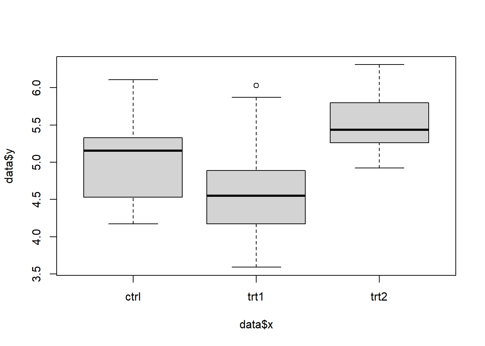

Quarto Document
Figura
- Chunk di codice
knitr::include_graphics("image/daydreaming5final.jpg")
- Markdown

Grafico

In Figura 2 c’è il box plot dei dati
Colonne
questa è la prima colonna
ggggggggggggggggggggg ggggggggggg ddddddddddddddd rrrrrrrrrr jjjjjj
questa è la seconda colonna
ggggggggggggggggggggg ggggggggggg ddddddddddddddd rrrrrrrrrr jjjjjj
questa è la terza colonna
ggggggggggggggggggggg ggggggggggg ddddddddddddddd rrrrrrrrrr jjjjjj
Tabset semplice
primo tip tap
secondo tap tip
jyhtbgrvfds
Tabset con cose
knitr::include_graphics("image/daydreaming5final.jpg")
qui c’è la Figura Figura 3
nhtbgvdfs